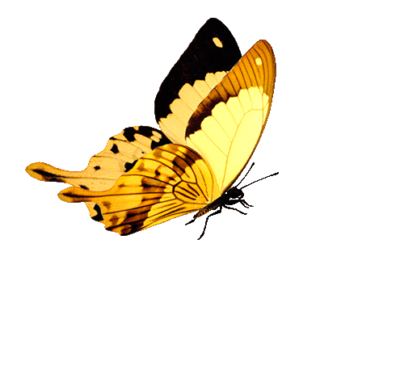
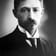

Ох, лето красное! любил бы я тебя,
Когда б не зной, да пыль, да комары, да мухи.
Ты, все душевные способности губя,
Нас мучишь; как поля, мы страждем от засухи;

Чем жарче день, тем сладостней в бору
Дышать сухим смолистым ароматом,
И весело мне было поутру
Бродить по этим солнечным палатам!
Летний вечер тих и ясен;
Посмотри, как дремлют ивы;
Запад неба бледно-красен,
И реки блестят извивы.